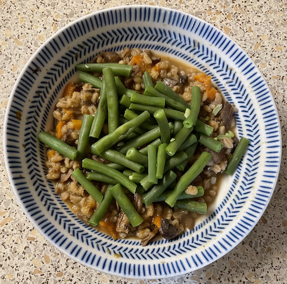

Mushroom & barley
Porcini mushrooms
- Soak 25g dried porcini mushrooms in 700ml hot water
- When soft lift mushrooms out of liquid, remove any hard bits and chop
Stew
- Heat for 15 mins
- 2 tbsp olive oil
- 500g mixed mushrooms chopped
- 3 carrots chopped
- Add 1 cup (225g) pearled barley and cook for 2 mins
- Add porcini mushrooms and cook for 1 min
- Add and simmer for 20-30 mins until barley is soft
- 1 bay leaf
- porcini soaking liquid (without the grit at bottom)
- 700ml vegetable stock
- Add 1 tbsp soy sauce
Notes
- Serve with asparagus / green beans / warmed bruschetta tomatoes
- For fresh mushrooms can use shiitake, cremini, portobello, chestnut, button mushrooms
